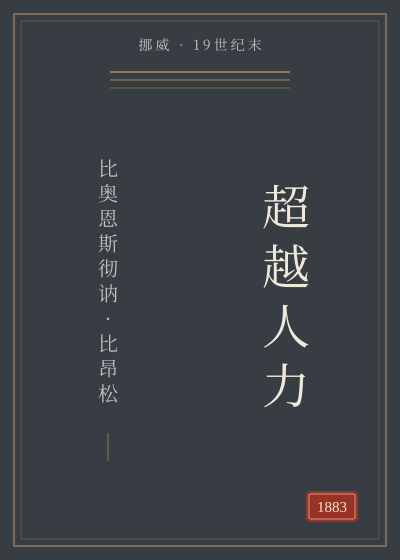

超越人力
一、基本信息
| 作者 | 比奥恩斯彻讷·比昂松 |
|---|---|
| 成书/出版 | 1883/1895年（Britannica B337：Over Ævne I og II (1883, 1895)） Bjornstjerne Bjornson — Encyclopaedia Britannica（百科全书） |
| 国别/地区 | 挪威 |
| 时代 | 近代 · 19世纪末 |
| 体裁 | 戏剧（两部） |
| 语言 | 挪威语 |
《超越人力》狂热结构图（主题·结构图）
二、创作背景
Britannica（B337）：Over Ævne I og II——'The two dramas that brought him an international reputation were thus written in self-imposed exile'（带来国际声誉的两部戏剧，写于自我放逐中——B337 指向待核）。
Britannica（B337）：'his plays were influential in establishing social realism in Europe'。
题材（通说待核）：神父桑戈的信仰狂热——'超越人力'的奇迹主张与社会代价。
三、内容脉络
（通说待核）第一部：桑戈神父以奇迹为名的葬礼赌注。
（通说待核）第二部：知识的傲慢与狂热的对撞。
四、主要人物表
| 人物 | 身份 | 说明 |
|---|---|---|
| 桑戈 | 神父 | （通说待核） |
五、主题与艺术特点
- 信仰的狂热与理性（通说待核）。
- 国际声誉的两部曲（B337 注记）。
- 社会现实主义（B337）。
六、影响与评论
- Britannica：'The two dramas that brought him an international reputation'（B337——指向待核）。
Bjornstjerne Bjornson — Encyclopaedia Britannica（百科全书） - Britannica：1903诺奖（B337 交叉）。
Bjornstjerne Bjornson — Encyclopaedia Britannica（百科全书）
七、阅读建议
难点
- 两部的主题延续。
- 宗教与社会改革的语境。
- 《超越人力》中译名（《越界》两说——通说待核）。
- 挪威文原版。
比昂松戏剧之二；与《破产》对读。
八、待核实
- '国际声誉两部'是否确指本作核对（B337 语境）。
- 桑戈人名核对（通说）。
- 两部年份（1883/1895——B337）核对。